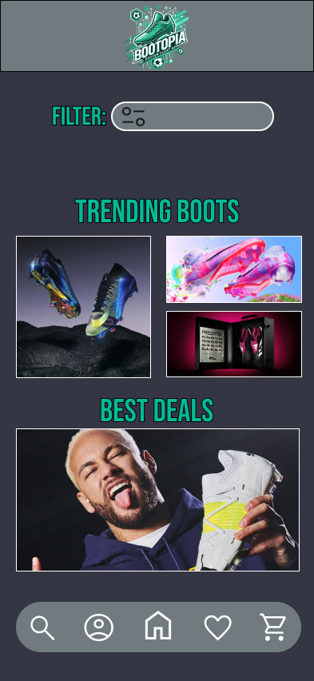
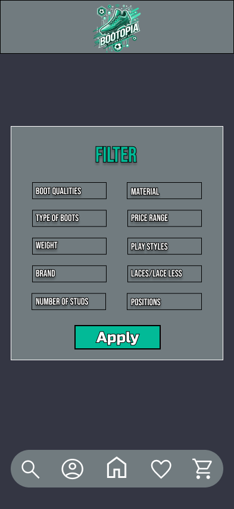
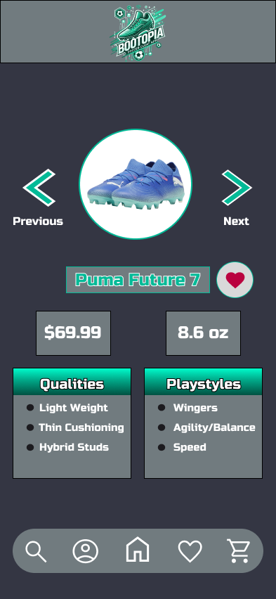
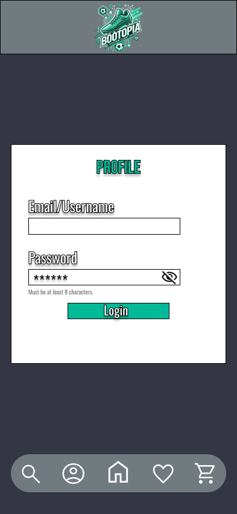
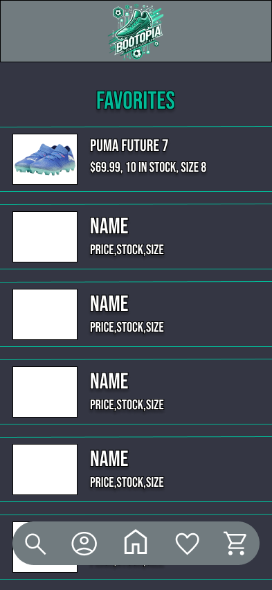
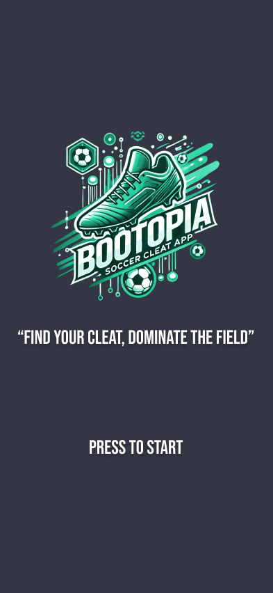

Bootopia.
Finding the perfect soccer cleat shouldn't have to be complicated. Bootopia is a mobile app concept designed to help players discover cleats that match their position, playstyle, and preferences.
Finding the right fit.
Soccer players have different needs depending on their position, playing style, preferred materials, and budget. Choosing the right cleat involves more than simply selecting a brand or appearance.
My goal was to explore how a personalized discovery experience could help players narrow down their options and make more informed decisions.
Understanding the players.
I conducted interviews with two soccer players, Steven and Rajin, to understand their experiences buying cleats, what qualities mattered most, and the challenges they faced.
Steven
A midfielder and winger who values comfort, affordability, and the right fit. He described how different positions influence his preference for grip and lightweight cleats.
Rajin
A defensive player who values durability, lightweight construction, and comfort. He considers price important but is willing to invest in cleats that last.
What I learned.
Comfort and fit
A comfortable fit can influence how confidently players perform on the field.
Playstyle and position
Different positions can influence which qualities players prioritize.
Price and durability
Players consider affordability alongside long-term value and durability.
Player feedback
Both participants expressed interest in reviews or advice from other players before purchasing.
User personas.
I used the research to develop personas representing different player preferences and purchasing needs.


Mapping the experience.
I created an information architecture and user flow to organize the app and map the journey from selecting preferences to exploring recommended cleats.
.png)

From sketches to wireframes.
I began with hand-drawn sketches to explore layouts and navigation, then developed low-fidelity wireframes to establish the structure of the app.


Introducing Bootopia.
The high-fidelity design brings together cleat discovery, personalized filters, product details, and saved favorites in a dark interface with teal accents.






What I'd improve next.
This project helped me understand how research findings can guide product features and design decisions. A future iteration could explore player reviews and a durability score to give users more information before choosing cleats.
Usability testing would also be an important next step to evaluate how easily players can navigate the app and find relevant cleats.